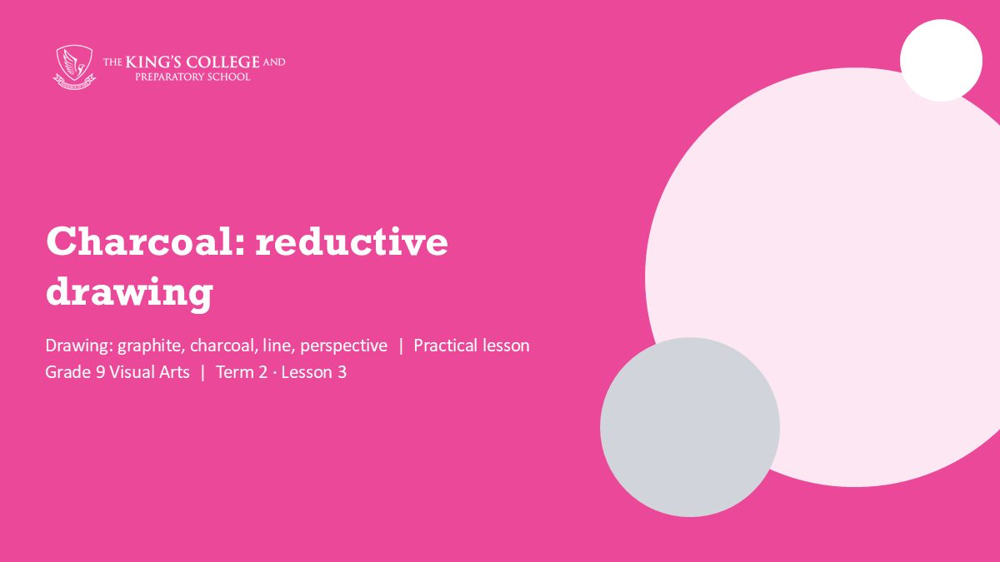

Term 2 · Lesson 3 · Practical lesson
Charcoal: reductive drawing
Start here
Today I will
- Make an even toned ground
- Lift out highlights and light areas with an eraser
- Build darks with compressed charcoal
Think first
Usually you add dark marks to white paper. What if you started with a grey page and drew with an eraser?
Words to Know
| Word | Meaning |
|---|---|
| Reductive drawing | Drawing by taking away: cover the paper with tone first, then erase or lift out the light areas. |
| Toned ground | An even mid-grey layer of charcoal over the paper, which you draw darks into and lift lights out of. |
| Lifting out | Removing charcoal with an eraser or tissue to make lighter areas. |
| Highlight | The lightest spot, where the light hits the object most directly. |
| Cast shadow | The dark shape an object throws onto the surface beside it. |
Slides

Videos
Notes
Toning the page and drawing the light with an eraser.
How a reductive drawing works
- Tone the page: Rub vine charcoal across the page and smooth it with a tissue to an even mid-grey.
- Map the shapes: Draw the object's outline lightly with vine charcoal.
- Lift out the lights: Use a shaped putty eraser for highlights and light planes.
- Add the darks: Use compressed charcoal for the core shadow and cast shadow.
- Adjust: Go back and forth between lifting and darkening until the form looks solid.
Three values on one page
| Where | What you do |
|---|---|
| Light areas | Lift out with the eraser. |
| Mid-tones | Leave the toned ground as it is. |
| Dark areas | Add compressed charcoal, in layers. |
Remember
Start in the middle grey; lift the light, add the dark.
Practical
You need: Visual journal, vine and compressed charcoal, putty eraser, tissue, newsprint, object and lamp
Reductive study of a simple object
- Tone a 15 × 15 cm square in your visual journal to an even mid-grey.
- Place your object under the lamp and draw its outline lightly with vine charcoal.
- Squint to find the lightest areas and lift them out with the putty eraser.
- Add the core shadow and cast shadow with compressed charcoal.
- Soften the edges where light meets shadow on curved forms.
- Next to the study, write three steps of reductive drawing in your own words.
Assessment
Term 2 Assessment due (Friday).
Test yourself
- What is a toned ground?
- In a reductive drawing, how do you make the lightest areas?
- Why do we add compressed charcoal last?
Show answers
1. An even mid-grey layer of charcoal over the paper. 2. Lift the charcoal off with a putty eraser or tissue. 3. It is very dark and hard to erase, so we add it once the drawing is right.
Finished early?
Reductive thumbnail
Make a small drawing by taking away instead of adding.
- Rub vine charcoal over a 10 cm square in your visual journal and smooth it with a tissue to an even mid-grey.
- Lightly draw a simple object, such as a cup or an apple.
- Lift out the lightest areas with a shaped putty eraser.
- Add the core shadow and cast shadow with compressed charcoal.